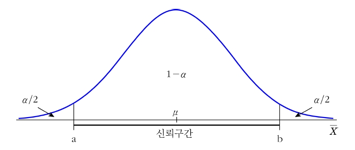
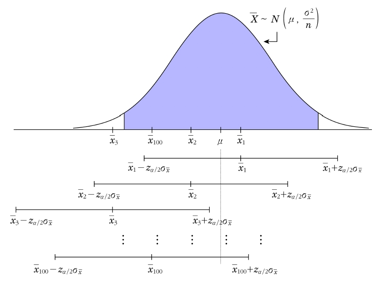
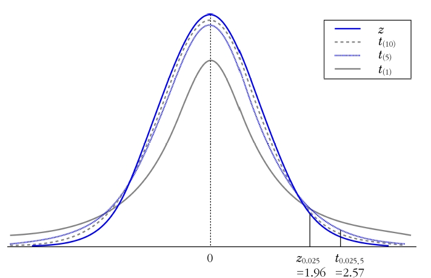
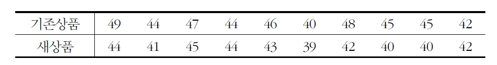
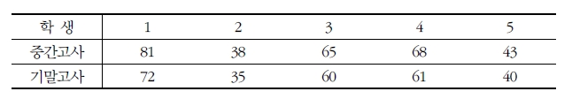
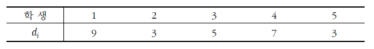
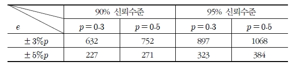

Chapter 9 구간추정
점추정량은 분산을 가지고 있으므로 확률표본에 의해 구해진 점추정값이 모수와 정확히 일치한다고 단정지을 수 없음
점추정값이 모수보다 클 수도 있고 작을 수도 있으므로 더욱 타당한 추정을 하기 위해 하나의 점추정값으로 모수를 추정하는 것이 아니라 일정한 신뢰수준(confidence level) 하에서 모수가 포함되어 있으리라고 기대되는 구간으로 모수를 추정
이를 구간추정(interval estimation)이라 하고 추정된 구간을 신뢰구간(confidence interval)이라 함
예를 들어 냉장고용 반도체의 평균수명에 대한 조사결과, 반도체의 평균수명이 7년에서 10년으로 나타났다고 하면, 소비자들은 이 조사결과를 얼마나 신뢰할 수 있는지 알아야 정확하게 판단할 수 있음
보통의 경우 구간추정은 \(95\%\) 신뢰도를 적용하며, 이 신뢰도가 커지면 그 구간 안에 미지의 모수가 포함될 확신이 커짐
9.1 신뢰구간
모수 \(\theta\)에 대한 추정량을 \(\hat{\theta}\)이라고 하고 \(c\)를 임의의 상수라고 하면 \[P(|\hat{\theta}-\theta|\le c)=1-\alpha\] \[P(\hat{\theta}-c \le \theta \le \hat{\theta}+c)=1-\alpha\] 이고 \((0\le \alpha \le 1)\) 이때 구간 \((\hat{\theta}-c, \hat{\theta}+c)\)를 모수 \(\theta\)에 대한 \(100(1-\alpha)\%\) 신뢰구간이라 한다.
여기서 \(100(1-\alpha)\%\)를 구간추정의 신뢰수준이라고 하고 보통 \(95\%\)를 주로 사용함
신뢰수준 \(95\%\)의 의미는 \(100\)번 중 \(95\)번은 신뢰구간이 모수를 포함하고 있다는 것이고 이는 \(95\)번은 올바른 구간추정이 된다는 의미
구간추정은 실제로 한번 추출된 크기 \(n\)의 표본만을 가지고 추정하므로 구해진 구간은 모수를 포함하고 있거나 또는 포함하고 있지 않거나 둘 중 하나
표본을 뽑아 신뢰구간을 무수히 많이 계산하면 그 중 \(95\%\) 정도는 모수를 포함하게 되며, 이는 여러 번의 구간추정 중 \(95\%\)만이 옳은 구간추정이라는 의미
따라서 우리가 계산한 신뢰구간은 \(100\)번 중 \(95\)번은 모수를 포함하는 다수의 신뢰구간 중 하나를 의미
일반적으로 신뢰구간은 정의 9.1을 만족하면서 구간의 길이가 최소인 것을 말함
모수의 신뢰한계=표본의 추정량 \(\pm\) 표본오차(sampling error)
표본오차=신뢰계수\(\times\)추정량의 표준오차(standard error)
신뢰계수: 신뢰도의 범위를 나타내는 상수
9.2 모평균의 구간추정
9.2.1 모분산 \(\sigma^2\)을 아는 경우
모평균 \(\mu\)에 대한 \(100(1-\alpha)\%\) 신뢰구간은 \(\mu\)의 불편추정량인 표본평균 \(\bar{X}\)의 분포에서 두 점사이의 면적이 \(100(1-\alpha)\%\)가 되는 구간을 의미
모집단이 정규분포를 따르거나, 혹은 \(n\)이 충분히 크다면 모집단의 분포에 상관없이 중심극한정리에 의해 \(\bar{X}\)의 분포는 정규분포 \(N(\mu, \sigma^2/n)\)을 따름
모수 \(\mu\)에 대한 신뢰구간을 구하기 위해 \(\bar{X}\)의 분포를 이용하여 두 점 사이의 면적이 \(1-\alpha\)를 만족하는 \(z_{\alpha/2}\)를 다음과 같이 구할 수 있음 \[P(-z_{\alpha/2}<Z=\frac{\bar{X}-\mu}{\sigma/\sqrt{n}}<z_{\alpha/2})=1-\alpha\]
예를 들어 \(1-\alpha=0.95\)이면 \(z_{\alpha/2}=z_{0.025}=1.96\)이고, \(1-\alpha=0.90\)이면 \(z_{\alpha/2}=z_{0.05}=1.645\)임
\(100(1-\alpha)\%\) 신뢰구간은 최단구간을 의미하므로 정규분포에서 중앙에 위치해야 하고 양쪽 꼬리부분에 \(\alpha/2\)의 확률을 분배해야 함
표본평균의 분포(정규분포)에서의 신뢰구간 \((a,b)\)

표본평균 \(\bar{X}\)의 분포에서 \(100(1-\alpha)\%\) 신뢰구간은 다음과 같이 정리할 수 있음 \[P\left( |\bar{X}-\mu|<z_{\alpha/2}\frac{\sigma}{\sqrt{n}}\right) =1-\alpha\] \[P\left( \mu-z_{\alpha/2}\frac{\sigma}{\sqrt{n}}<\bar{X}<\mu+z_{\alpha/2}\frac{\sigma}{\sqrt{n}}\right) =1-\alpha\] \[P\left( \bar{X}-z_{\alpha/2}\frac{\sigma}{\sqrt{n}}<\mu < \bar{X}+z_{\alpha/2}\frac{\sigma}{\sqrt{n}}\right) =1-\alpha\]
모표준편차 \(\sigma\)가 알려져 있으므로 \(\bar{X}-z_{\alpha/2}\frac{\sigma}{\sqrt{n}}\), \(\bar{X}+z_{\alpha/2}\frac{\sigma}{\sqrt{n}}\)는 표본평균 \(\bar{X}\)에 의존하며 확률변수이고 통계량임
이들은 확률을 가지는 분위수라 해서 확률분위수(random quantile)라고도 함. 따라서 구간 \(\left( \bar{X}-z_{\alpha/2}\frac{\sigma}{\sqrt{n}}, \bar{X}+z_{\alpha/2}\frac{\sigma}{\sqrt{n}}\right)\)는 확률구간(random interval)임
확률구간 \(\left( \bar{X}-z_{\alpha/2}\frac{\sigma}{\sqrt{n}}, \bar{X}+z_{\alpha/2}\frac{\sigma}{\sqrt{n}}\right)\)가 모르는 모수 \(\mu\)를 포함할 확률은 \(1-\alpha\)
표본평균 \(\bar{X}\)가 확률변수이므로 신뢰구간은 표본에서 구해진 \(\bar{X}\)에 의해서 확률적으로 변함. 따라서 실험(random experiment)을 할 때 마다 구간의 값은 달라짐
모평균에 대한 100개의 신뢰구간

신뢰구간은 표본마다 변하는 표본평균 \(\bar{X}\)에 의해 달라짐. 만약 \(95\%\) 신뢰구간을 계산했다면 그림의 세 번째 신뢰구간처럼 모평균 \(\mu\)를 포함하지 않을 수도 있음. 이는 \(100\)번 표본을 추출하여 신뢰구간을 계산했을 때 \(5\)번 정도는 신뢰구간이 모평균 \(\mu\)를 포함하지 않는 경우가 발생한다는 것을 의미
\[정리 9.1\] 확률표본 \(X_1, \ldots, X_n\)은 \(N(\mu, \sigma^2)\)에서 추출되었거나 또는 모집단의 분포가 알려져 있지 않더라도 표본크기 \(n\)이 충분히 큰 경우는 알려진 모분산 \(\sigma^2\)에 대해 모평균 \(\mu\)에 대한 \(100(1-\alpha)\%\) 신뢰구간과 신뢰한계는 다음과 같다. \[\left( \bar{X}-z_{\alpha/2}\frac{\sigma}{\sqrt{n}},\hskip5pt \bar{X}+z_{\alpha/2}\frac{\sigma}{\sqrt{n}} \right), \hskip10pt \mu=\bar{X}\pm z_{\alpha/2}\frac{\sigma}{\sqrt{n}}\] 단, 표준정규분포에서 \(P(|Z|\ge z_{\alpha/2})=\alpha\)이다.
표본크기 \(n\)이 커지면 표본평균의 표준오차 \(\sigma/\sqrt{n}\)는 작아지고 신뢰구간은 짧아짐. 즉, 표본크기가 커지면 그만큼 정확도(정도)가 높아짐
정규모집단에서 \(n=9\)인 표본을 추출하였더니, 표본평균이 \(36\)이었다고 한다. 이 정규모집단의 모분산이 \(9\)라고 할 때 다음 물음에 답하라.
a) 모평균 \(\mu\)에 대한 \(95\%\) 신뢰구간을 구하라.
b) 동일한 신뢰수준 \(95\%\)를 유지하면서 신뢰구간의 폭이 \(\pm 1\) 미만이 될 수 있는 표본크기를 구하라.
(풀이) a) \(\bar{x}=36\), \(\sigma^2=9\), \(n=9\), \(z_{0.025}=1.96\)이므로 \(95\%\) 신뢰한계는 \[\bar{x}\pm z_{0.025}\frac{\sigma}{\sqrt{n}}=36\pm 1.96 \frac{3}{\sqrt{9}}\]
이고 따라서 모평균 \(\mu\)의 신뢰구간은 \((34.04, 37.96)\)이 된다.
b) 신뢰구간의 폭을 신뢰수준이 \(95\%\)이면서 \(\pm\) 미만이 되게 하려면 다음을 만족해야 한다. \[z_{0.025}\frac{\sigma}{\sqrt{n}}=\frac{1.96\times 3}{\sqrt{n}}<1\]
위의 식을 \(n\)에 관해서 풀면 \(n>34.5744\)가 되므로 표본크기 \(n\)은 35이다.
9.2.2 모분산 \(\sigma^2\)을 모르는 경우
현실적으로 \(\sigma^2\)을 모르는 경우가 많으며, 이 경우 미지의 모분산 대신 추정량인 표본분산 \(S^2\)을 사용
모집단이 정규분포를 따르거나 표본크기 \(n\)이 큰 경우에는 모평균의 신뢰구간을 추정할 때 중심극한정리에 의해 표본평균의 분포가 정규분포를 따른다는 것을 이용함. 하지만 모분산을 모르는 경우 모분산 \(\sigma^2\) 대신 표본분산 \(S^2\)을 사용하여 \(t\)분포를 통해 신뢰계수를 구함
크기 \(n\)의 확률변수 \(X_1, \ldots, X_n\)의 표본평균의 표준화계수 \(\frac{\bar{X}-\mu}{\sigma/\sqrt{n}}\)가 표준정규분포를 따르면 \(\sum_{i=1}^n \frac{(X_i -\bar{X})^2}{\sigma^2}\)는 자유도가 \(n-1\)인 카이제곱분포를 따르며 두 확률변수는 서로 독립이므로 확률변수 \[\frac{(\bar{X}-\mu)/(\sigma/\sqrt{n})}{\sqrt{(1/\sigma^2)\sum_{i=1}^n(X_i-\bar{X})^2/(n-1)}} = \frac{\sqrt{n(n-1)}(\bar{X}-\mu)}{\sqrt{\sum_{i=1}^n(X_i-\bar{X})^2}}\] 은 자유도 \(n-1\)인 \(t\)분포를 따른다. 즉 확률변수 \(\frac{\bar{X}-\mu}{S/\sqrt{n}}\)은 자유도 \(n-1\)인 \(t\)분포를 따른다.
모집단이 정규분포를 따르거나 표본크기 \(n\)이 클 경우(\(n\ge 30\))에는 모평균의 신뢰구간을 추정할 수 있음. 이때 사용하는 표본분산 \(S^2\)은 모분산 \(\sigma^2\)의 불편추정량이자 일치추정량임
\(t\)분포는 정규분포처럼 평균에 대해 좌우대칭의 종모양이나 표준정규분포보다 중앙의 밀도는 낮고 더 넓게 퍼진 분포 형태를 지님
\(t\)분포의 평균은 \(0\)이며 \(t\)분포의 분산은 자유도/(자유도-2)로 \(1\)보다 커서 표준정규분포의 분산보다 크나, 표본크기(자유도)가 커짐에 따라 \(t\)분포는 정규분포에 접근해 감
모집단이 정규분포를 따르지 않고 표본크기가 작으며(\(n<30\)) 모분산 \(\sigma^2\)이 알려져 있지 않은 경우 \(S^2\)은 \(\sigma^2\)의 좋은 추정량이 될 수 없기때문에 표본평균의 분포를 정규분포 또는 \(t\)분포를 사용할 수 없음
표준정규분포와 \(t\)분포의 비교

\(\sigma\) 대신 \(S\)를 사용하므로 추정결과의 신뢰성이 낮아지며 \(\sigma\)를 알 경우보다 신뢰구간의 길이는 더 길어짐
표본크기 \(n\)이 크다면 표본표준편차 \(S\)는 \(\sigma\)의 일치추정량이므로 거의 정확하게 추정함
확률표본 \(X_1, \ldots, X_n\)은 \(N(\mu, \sigma^2)\)인 모집단에서 추출되었으며 \(n\le 30\)이고 모분산 \(\sigma^2\)을 모르는 경우 모평균 \(\mu\)에 대한 \(100(1-\alpha)\%\) 신뢰구간과 신뢰한계는 다음과 같다. \[\left( \bar{X}-t_{(\alpha/2,n-1)}\frac{S}{\sqrt{n}},\hskip5pt \bar{X}+t_{(\alpha/2,n-1)}\frac{S}{\sqrt{n}} \right), \hskip10pt \mu=\bar{X}\pm t_{(\alpha/2,n-1)}\frac{S}{\sqrt{n}}\] 단, 표준정규분포에서 \(P(|t|\ge t_{(\alpha/2,n-1)})=\alpha\)이다.
- 표본크기가 충분히 크다면 모평균의 신뢰구간은 \(t_{(\alpha/2,n-1)}\) 대신 \(z_{\alpha/2}\)를 사용하여 구할 수 있음
젖소가 생산하는 우유지방의 양을 추정하려고 한다. 우유지방의 양이 정규분포를 따른다고 할 때, 모평균을 추정하기 위하여 \(20\)마리 젖소의 우유지방을 측정한 결과 평균은 \(500.05\)이고 표본표준편차는 \(82.25\)이었다고 한다. 모평균 \(\mu\)의 \(95\%\) 신뢰구간을 구하라.
(풀이) \(n=20\), \(\bar{x}=500.05\), \(s=82.25\), \(t_{(0.025,19)}=2.093\)이므로 \(95\%\) 신뢰구간은 \[\left( \bar{x}- t_{(0.025,19)}\frac{s}{\sqrt{n}}, \hskip5pt \bar{x}+ t_{(0.025,19)}\frac{s}{\sqrt{n}} \right)\] \[\left( 500.05- (2.093)\frac{82.25}{\sqrt{20}}, \hskip5pt 500.05+ (2.093)\frac{82.25}{\sqrt{20}} \right)\]
이다. 그러므로 젖소 한 마리의 우유지방의 모평균 \(\mu\)의 \(95\%\) 신뢰구간은 \((461.56, 538.54)\)이다.
9.3 모평균 차의 구간추정
9.3.1 독립적인 두 표본
- 모분산 \(\sigma_1^2\), \(\sigma_2^2\)을 알 경우
- 확률표본 \(X_1, \ldots, x_{n_1}\)과 \(Y_1, \ldots, Y_{n_2}\)가 서로 독립인 정규분포를 각각 따른다고 할 때, 모평균 차에 대한 추정은 \(\mu_1 -\mu_2\)에 대해 이루어지며, 구간추정은 두 모집단에서 추출된 표본평균의 차인 \(\bar{X}-\bar{Y}\)를 이용하는 것이 바람직함
\(X_1, \ldots, X_{n_1}\)는 \(N(\mu_1, \sigma_1^2)\)으로부터 추출된 \(n_1\)개의 확률표본이고 \(Y_1, \ldots, Y_{n_2}\)는 \(N(\mu_2, \sigma_2^2)\)으로부터 추출된 \(n_2\)개의 확률표본이며, 두 표본들이 독립이라고 할 때 \(\bar{X}-\bar{Y}\)의 분포는 다음과 같다. \[\bar{X}-\bar{Y} \sim N\left( \mu_1-\mu_2, \frac{\sigma_1^2}{n_1} +\frac{\sigma_2^2}{n_2}\right)\]
정규분포를 따르는 모집단에서 표본을 추출하는 경우의 신뢰 구간은 정확한 구간이 되나 그렇지 않은 경우에는 표본의 크기가 큰 경우에만 중심극한정리에 의해 근사적인 신뢰구간을 구할 수 있음
모평균 차에 대한 신뢰구간은 모평균의 신뢰구간에서와 같이 \(Z\) 통계량을 이용하여 구하며, \(\sigma_1^2\), \(\sigma_2^2\)을 아는 경우 \(Z\) 통계량은 다음과 같음 \[Z=\left( (\bar{X}-\bar{Y})-(\mu_1-\mu_2)\right) /\sqrt{\sigma_1^2/n_1+\sigma_2^2/n_2}\sim N(0,1)\]
모분산 \(\sigma_1^2\), \(\sigma_2^2\)을 아는 경우 \(X_1, \ldots, X_{n_1}\)는 \(N(\mu_1, \sigma_1^2)\)으로부터 추출된 \(n_1\)개의 확률표본이고 \(Y_1, \ldots, Y_{n_2}\)는 \(N(\mu_2, \sigma_2^2)\)으로부터 추출된 \(n_2\)개의 확률표본이며, 두 표본들이 독립이라고 하자. \(\sigma_1^2\), \(\sigma_2^2\)이 알려져 있을 경우, 모평균 \(\mu_1 -\mu_2\)에 대한 \(100(1-\alpha)\%\) 신뢰구간과 신뢰한계는 \[\left( (\bar{X}-\bar{Y})-z_{\alpha/2}\sqrt{\frac{\sigma_1^2}{n_1}+\frac{\sigma_2^2}{n_2}},\hskip5pt (\bar{X}-\bar{Y})+z_{\alpha/2}\sqrt{\frac{\sigma_1^2}{n_1}+\frac{\sigma_2^2}{n_2}} \right)\] \[\mu_1-\mu_2=(\bar{X}-\bar{Y})\pm z_{\alpha/2}\sqrt{\frac{\sigma_1^2}{n_1}+\frac{\sigma_2^2}{n_2}}\] 단, 표준정규분포에서 \(P(|Z|\ge z_{\alpha/2})=\alpha\)이다.
만일 두 모집단의 모분산이 동일하다면\((\sigma_1^2=\sigma_2^2=\sigma^2)\) 두 모평균의 차 \(\mu_1-\mu_2\)의 신뢰구간은 다음과 같음 \[\left( (\bar{X}-\bar{Y})-z_{\alpha/2}\sigma\sqrt{\frac{1}{n_1}+\frac{1}{n_2}},\hskip5pt (\bar{X}-\bar{Y})+z_{\alpha/2}\sigma\sqrt{\frac{1}{n_1}+\frac{1}{n_2}} \right)\]
어떤 전구를 생산하는 회사는 제1공장과 제2공장을 가지고 있다고 한다. 제1공장과 제2공장에서 생산되는 전구를 각각 100개 무작위 추출하여 수명시간을 측정한 결과 표본평균이 각각 \(2,500\)시간과 \(2,200\)시간이었다. 두 공장에서 생산되는 전구의 수명의 모표준편차가 각각 \(121\)시간과 \(81\)시간이라면 제1공장과 제2공장에 생산되는 전구의 평균 수명의 차의 \(95\%\) 신뢰구간을 구하라.
(풀이)
제1공장과 제2공장에서 생산되는 전구의 수명을 각각 \(X\), \(Y\)라고 할 때, \(n_1=100\), \(n_2=100\)으로 충분히 크기 때문에 중심극한정리에 의해 표준정규분포를 사용하여 추정할 수 있다. \(\bar{x}=2500\), \(\bar{y}=2200\), \(\sigma_1=121\), \(\sigma_2=81\)이므로 두 공장 간의 모평균 차에 대한 \(95\%\) 신뢰한계는 다음과 같다. \[(\bar{x}-\bar{y})\pm z_{\alpha/2}\sqrt{\frac{\sigma_1^2}{n_1}+\frac{\sigma_2^2}{n_2}}=(2500-2200)\pm 1.96\sqrt{\frac{121^2}{100}+\frac{81^2}{100}}\]
따라서 두 공장에서 생산되는 전구의 평균 수명시간의 차에 대한 \(95\%\) 신뢰구간은 \((271.46, 328.54)\)가 된다.
즉, \(95\%\) 신뢰도로 제1공장에서 생산된 전구의 평균수명은 제2공장에서 생산된 전구의 평균수명보다 최소 271.46시간, 최대 328.54시간 더 크다.
2) 모분산 \(\sigma_1^2\), \(\sigma_2^2\)을 모르는 경우
모분산을 모르는 경우, 모분산이 동일한 경우와 동일하지 않은 경우로 구분하여 신뢰구간을 구함
두 모집단의 모분산을 동일하다는 것\((\sigma_1^2=\sigma_2^2=\sigma^2)\)을 가정하는 경우는 모분산을 아는 경우의 신뢰구간에서 \(\sigma^2\) 대신 \(S^2\)을 사용하여 구간을 추정함
이때 두 모집단의 공통된 분산인 \(\sigma^2\)을 대체할 수 있는 추정량인 합동분산(pooled variance) \(S_p^2\)을 사용해야 함 \[\begin{aligned} S_p^2&=\frac{\sum_{i=1}^{n_1} (X_i-\bar{X})^2+\sum_{j=1}^{n_2}(Y_j-\bar{Y})^2}{(n_1-1)+(n_2-1)}\\ &= \frac{(n_1-1)S_1^2+(n_2-1)S_2^2}{n_1+n_2-2}\end{aligned}\]
두 모집단의 모분산이 동일하지 않다는 것\((\sigma_1^2\ne \sigma_2^2)\)을 가정하는 경우는 모분산을 아는 경우의 신뢰구간에서 \(\sigma_1^2\), \(\sigma_2^2\) 대신 \(S_1^2\), \(S_2^2\)을 사용하여 구간을 추정함
모분산 대신 모분산의 추정량을 사용하기때문에 신뢰구간을 추정할 때 \(t\)분포를 사용함
모분산이 동일하다고 가정된 경우는 \(\sigma^2\) 대신 \(S_p^2\)을 이용하기 때문에 \(t\)분포의 자유도는 \(S_p^2\)을 계산할 때 적용된 분모항과 같음
모분산이 동일하지 않다고 가정된 경우는 추정량인 \(S_1^2\), \(S_2^2\) 두 개이므로 자유도는 다르게 구해지며, 이때 사용하는 자유도는 웰치의 조정자유도(Welch’s adjusted degrees of freedom) 또는 새터스웨이트의 자유도(Satterthwaite’s degrees of freedom)라고 부름
\(X_1, \ldots, X_{n_1}\)는 \(N(\mu_1, \sigma_1^2)\)으로부터 추출된 \(n_1\)개의 확률표본이고 \(Y_1, \ldots, Y_{n_2}\)는 \(N(\mu_2, \sigma_2^2)\)으로부터 추출된 \(n_2\)개의 확률표본이며, 두 표본들이 독립이고 \(\sigma_1^2\), \(\sigma_2^2\)이 알려져 있지 않다고 가정하자.
i) \(\sigma_1^2=\sigma_2^2=\sigma^2\) \[T=\frac{(\bar{X}-\bar{Y})-(\mu_1-\mu_2)}{S_p\sqrt{\frac{1}{n_1}+\frac{1}{n_2}}} \sim t_{(n_1+n_2-2)}\] ii) \(\sigma_1^2\ne \sigma_2^2\) \[T=\frac{(\bar{X}-\bar{Y})-(\mu_1-\mu_2)}{\sqrt{\frac{S_1^2}{n_1}+\frac{S_2^2}{n_2}}} \sim t_{(\nu)}\] 여기서 \(\nu=\left( \frac{S_1^2}{n_1}+\frac{S_2^2}{n_2}\right)^2/\left( \frac{(S_1^2/n_1)^2}{n_1-1}+\frac{(S_2^2/n_2)^2}{n_2-1} \right)\)이다.
\(X\)와 \(Y\)의 두 모집단이 정규분포를 따르고 서로 독립이며, 두 모집단의 분산을 모르는 경우 모평균 차 \(\mu_1-\mu_2\)에 대한 \(100(1-\alpha)\%\) 신뢰구간은 다음과 같다.
i) \(\sigma_1^2=\sigma_2^2=\sigma^2\) \[\left( (\bar{X}-\bar{Y})-t_{(\alpha/2,n_1+n_2-2)}S_p\sqrt{\frac{1}{n_1}+\frac{1}{n_2}},\hskip5pt (\bar{X}-\bar{Y})+t_{(\alpha/2,n_1+n_2-2)}S_p\sqrt{\frac{1}{n_1}+\frac{1}{n_2}} \right)\] 여기서 \(P(|t|\ge t_{(\alpha/2,n_1+n_2-2)})=\alpha\)이다.
ii) \(\sigma_1^2\ne \sigma_2^2\) \[\left( (\bar{X}-\bar{Y})-t_{(\alpha/2,\nu)}\sqrt{\frac{S_1^2}{n_1}+\frac{S_2^2}{n_2}},\hskip5pt (\bar{X}-\bar{Y})+t_{(\alpha/2,\nu)}\sqrt{\frac{S_1^2}{n_1}+\frac{S_2^2}{n_2}} \right)\]
여기서 \(\nu\)는 새터스웨이트의 자유도이고 \(P(|t|\ge t_{(\alpha/2,\nu)})=\alpha\)이다.
한 페인트 제조회사는 새 상품을 개발하여 기존 상품과의 건조시간을 비교하고자 한다. 기존 상품과 새 상품을 각각 10종류의 벽에 칠한 후 건조시간을 측정하였다. 두 상품의 페인트 건조시간은 정규분포를 따른다고 할 때 새 상품의 건조시간이 기존 상품보다 얼마나 더 빠른지 \(95\%\) 신뢰구간을 이용하여 설명하라. 단, 모분산이 동일한 경우와 그렇지 않은 경우로 구분하여 설명하라.

(풀이) 기존상품의 페인트 건조시간을 \(X\)라고 하고 새상품의 페인트 건조시간을 \(Y\)라고 하면 기술통계량은 다음과 같다. \[\bar{x}=45,\hskip5pt \bar{y}=42,\hskip5pt s_1^2=7.33,\hskip5pt s_2^2=4, \hskip5pt n_1=10,\hskip5pt n_2=10\]
1) 두 집단의 모분산이 동일한 경우
두 집단의 모분산이 동일하므로 먼저 표본합동분산 \(S_p^2\)을 구한다 \[S_p^2=\frac{(n_1-1)s_1^2+(n_2-1)s_2^2}{n_1+n_2-2}=\frac{910-1)(7.33)^2+(10-1)4^2}{10+10-2}=5.67\]
자유도가 \(10+10-2=18\)이고 \(\alpha=0.05\)인 \(t\)값은 \(t\)분포표에 의해 \(2.101\)이므로 두 평균 차에 대한 \(95\%\) 신뢰한계는 다음과 같다. \[(\bar{x}-\bar{y})\pm t_{(0.025,18)}s_p \sqrt{\frac{1}{n_1}+\frac{1}{n_2}}=(45-42)\pm 2.101\sqrt{5.67(\frac{1}{10}+\frac{1}{10})}\]
따라서 두 모집단의 평균 차에 대한 \(95\%\) 신뢰구간은 \((0.76, 5.24)\)가 된다.
2) 두 집단의 모분산이 동일하지 않은 경우
두 집단의 모분산이 동일하지 않으므로 먼저 새터스웨이트의 자유도 \(\nu\)를 구한다. \[\nu=\left( \frac{S_1^2}{n_1}+\frac{S_2^2}{n_2}\right)^2/\left( \frac{(S_1^2/n_1)^2}{n_1-1}+\frac{(S_2^2/n_2)^2}{n_2-1} \right) =16.567\]
자유도가 \(16.567\)이고 \(\alpha=0.05\)인 \(t\)값은 \(2.1199\)이므로 두 평균 차에 대한 \(95\%\) 신뢰한계는 다음과 같다. \[(\bar{x}-\bar{y})\pm t_{(0.025,16.567)}\sqrt{\frac{s_1^2}{n_1}+\frac{s_2^2}{n_2}}=(45-42)\pm 2.12\sqrt{\frac{7.33}{10}+\frac{4}{10}}=16.567\]
따라서 두 모집단의 평균 차에 대한 \(95\%\) 신뢰구간은 \((0.75, 5.25)\)가 된다.
9.3.2 대응표본
관측값들이 짝을 이루고 있는 표본을 대응표본(paired sample; matched sample)이라고 함
예를 들어 고혈압 환자에 대한 치료제의 임상시험을 한다고 할 때 우리는 치료제가 효과가 있는지에 관심이 있으며, 이것을 조사하기 위해서 \(n\)명의 고혈압 환자를 추출하여 동일한 환자에게서 치료제를 투여하기 전과 투여한 후의 혈압을 측정하여 관찰하였다고 하면 투여하지 전의 \(n\)개의 관찰값과 투여한 후의 \(n\)개의 관찰값은 서로 짝을 이루며 대응되는데, 이러한 표본을 대응표본이라고 함
\(n\)개의 짝을 이루는 대응표본의 차이, 즉, 투여전과 투여 후의 혈압의 차이를 분석하기 위해서는 관찰값들 각각의 차이 \(D_i=X_i-Y_i\)를 계산하여 단일표본으로 생각하면 됨
그러면 모집단의 차이 \(\Delta\)에 대한 신뢰구간은 평균 \(\bar{D}\)를 사용하여 구할 수 있음
\(n\)개의 차이(difference) \(D_1, \ldots, D_n\)이 정규모집단으로부터의 추출된 확률표본이라면 모집단의 차이 \(\Delta\)에 대한 \(100(1-\alpha)\%\) 신뢰구간은 다음과 같다. \[\left( \bar{D}-t_{(\alpha/2,n-1)}\frac{S_D}{\sqrt{n}}, \hskip5pt \bar{D}+t_{(\alpha/2,n-1)}\frac{S_D}{\sqrt{n}} \right)\] \[\Delta=\bar{D}\pm t_{(\alpha/2,n-1)}\frac{S_D}{\sqrt{n}}\] 단, \(t\)분포에서 \(P(|t|\ge t_{(\alpha/2,n-1)})=\alpha\)이다.
통계학 수업을 수강하는 학생을 대상으로 중간고사와 기말고사 성적의 차이를 알아보고자 한다. 통계학 수업을 수강하는 학생 중 \(5\)명을 무작위로 추출하여 성적을 조사한 결과가 다음과 같을 때 중간고사와 기말고사의 성적 차에 대한 \(95\%\) 신뢰구간을 구하라. 단, 중간고사와 기말고사 성적을 정규분포를 따른다고 가정한다.

(풀이) 위의 자료는 대응표본이므로 우선 중간고사와 기말고사의 차 \(d_i\)를 구한다.

\(\bar{d}=5.4\), \(s_d^2=\sum_{i=1}^n\frac{(d_i-\bar{d})^2}{n-1}=6.8\)이므로 \(95\%\) 신뢰한계는 다음과 같다. \[\bar{d}\pm t_{(\alpha/2,n-1)}\frac{s_D}{\sqrt{n}}=5.4\pm 2.78\frac{\sqrt{6.8}}{\sqrt{5}}\]
따라서 위의 신뢰한계를 이용하면 중간고사 성적과 기말고사 성적의 차에 대한 \(95\%\) 신뢰구간은 \((2.16, 8.64)\)가 된다.
위의 \(5\)명의 학생에 대해 \(95\%\) 신뢰수준으로 중간고사 성적이 기말고사 성적보다 최소한 \(2.16\)점 더 높다.
9.4 모비율의 구간추정
모비율에 대한 구간추정은 모평균에 대한 구간추정과 비슷함
모비율 \(p\)에 대한 추정량은 표본비율(sample proportion) \(\hat{p}\)이고 표본크기 \(n\)이 클 경우 중심극한정리에 의해 다음이 성립함
표본비율 \(\hat{p}\)의 표본분포는 근사적으로 정규분포를 따른다. \[\hat{p}\sim N(p, p(1-p)/n)\] 표본비율 \(\hat{p}\)을 표준화하면 다음과 같이 표준정규분포를 따른다. \[\frac{\hat{p}-p}{\sqrt{p(1-p)/n}}\sim N(0,1)\]
- 만약 모비율 \(p\)가 알려져 있지 않다면 표준오차 \(\sigma(\hat{p})\)는 \(p\) 대신 \(\hat{p}\)를 사용함. 즉, 표본비율 \(\hat{p}\)의 표준오차의 추정량은 \(\hat{\sigma}(\hat{p})=\sqrt{\hat{p}(1-\hat{p})/n}\)임
표본크기가 충분히 클 경우 모비율 \(p\)에 대한 \(100(1-\alpha)\%\) 신뢰구간과 신뢰한계는 다음과 같다. \[\left( \hat{p}-z_{\alpha/2}\sqrt{\frac{\hat{p}(1-\hat{p})}{n}},\hskip5pt \hat{p}+z_{\alpha/2}\sqrt{\frac{\hat{p}(1-\hat{p})}{n}} \right)\] \[p=\hat{p}\pm z_{\alpha/2}\sqrt{\frac{\hat{p}(1-\hat{p})}{n}}\] 단, 표준정규분포에서 \(P(|Z|\ge z_{\alpha/2})=\alpha\)이다.
정부에서 \(100\)명의 표본을 추출하여 실업자를 조사한 결과 \(7\)명이 실업자이었다고 할 때 다음 물음에 답하라.
a) 우리나라 전체의 실업률에 대한 \(95\%\) 신뢰구간을 구하라.
b) \(95\%\)의 신뢰수준에서 신뢰구간의 너비가 \(0.02\) 미만이 되기 위해서는 표본크기 \(n\)의 최소값이 얼마인지 구하라.
(풀이) a) \(\hat{p}=7/100=0.07\)이므로 전체 실업률에 대한 \(95\%\) 신뢰한계는 다음과 같다. \[\hat{p}\pm z_{\alpha/2}\sqrt{\frac{\hat{p}(1-\hat{p})}{n}}=0.07\pm 1.96\sqrt{007(1-0.07)/100}\]
따라서 전체 실업률에 대한 \(95\%\) 신뢰구간은 \((0.02,0.12)\)가 된다.
b) 신뢰구간의 너비가 \(0.02\) 미만이어야 하므로 표본크기 \(n\)은 다음 조건에 의해 표본크기의 최소값은 \(2,501\)명이다. \[1.96\sqrt{007(1-0.07)/n}<0.01\]
9.5 모비율 차의 구간추정
모비율 차의 구간추정 역시 모평균 차의 구간추정과 마찬가지로 대표본인 경우 두 표본비율의 분포가 정규분포를 따른다고 가정하고 구함
\[정리 9.11\] 독립인 두 집단의 표본비율 \(\hat{p}_1\)과 \(\hat{p}_2\)의 차인 \(\hat{p}_1-\hat{p}_2\)의 표본분포는 \(n_1\)과 \(n_2\)가 충분히 크면 근사적으로 정규분포를 따른다. \[\hat{p}_1-\hat{p}_2\sim N(p_1-p_2, p_1(1-p_1)/n_1+p_2(1-p_2)/n_2)\] 표본비율의 차인 \(\hat{p}_1-\hat{p}_2\)을 표준화하면 표준정규분포를 따른다. \[\frac{(\hat{p}_1-\hat{p}_2)-(p_1-p_2)}{\sqrt{ p_1(1-p_1)/n_1+p_2(1-p_2)/n_2}}\sim N(0,1)\]
단일집단의 모비율의 구간추정에서와 마찬가지로 모비율 \(p_1\), \(p_2\)가 알려져 있지 않더라도 표본크기 \(n_1\)과 \(n_2\)가 충분히 크다면 \(p_1\), \(p_2\) 대신 \(\hat{p}_1\), \(\hat{p}_2\)를 사용하여 구간추정할 수 있음
두 표본비율 \(\hat{p}_1-\hat{p}_2\)에 대한 \(100(1-\alpha)\%\) 신뢰구간과 신뢰한계는 다음과 같다. (두 집단이 서로 독립이고 표본크기가 충분히 큰 경우) \[\left( (\hat{p}_1-\hat{p}_2)-z_{\alpha/2}\sqrt{\frac{\hat{p}_1(1-\hat{p}_1)}{n_1}+\frac{\hat{p}_2(1-\hat{p}_2)}{n_2}}, \hskip5pt (\hat{p}_1-\hat{p}_2)+z_{\alpha/2}\sqrt{\frac{\hat{p}_1(1-\hat{p}_1)}{n_1}+\frac{\hat{p}_2(1-\hat{p}_2)}{n_2}}\right)\] \[p_1-p_2=(\hat{p}_1-\hat{p}_2)\pm z_{\alpha/2}\sqrt{\frac{\hat{p}_1(1-\hat{p}_1)}{n_1}+\frac{\hat{p}_2(1-\hat{p}_2)}{n_2}}\] 단, 표준정규분포에서 \(P(|Z|\ge z_{\alpha/2})=\alpha\)이다.
얼룩을 지울 수 있는 두 가지 세척제가 있다. 이 두 세척제의 효과를 시험해 보았다. 시험 결과 첫 번재 세척제는 \(72\)번 중 \(61\)번 얼룩을 지우는데 성공했고, 두 번째 세척제는 \(79\)번 중 \(42\)번 성공했다고 한다. 두 세척제의 효과의 차이에 대한 \(95\%\) 신뢰구간을 구하라.
(풀이) 두 세척제의 표본비율은 \(\hat{p}_1=61/72=0.847\), \(\hat{p}_2=42/79=0.532\)이고 \(95\%\) 신뢰한계는 다음과 같이 구한다. \[\begin{aligned} &(\hat{p}_1-\hat{p}_2)\pm z_{0.025}\sqrt{\frac{\hat{p}_1(1-\hat{p}_1)}{n_1}+\frac{\hat{p}_2(1-\hat{p}_2)}{n_2}}\\ &=(0.847-0.532)\pm (1.96)\sqrt{\frac{(0.847)(1-0.847)}{72}+\frac{(0.532)(1-0.532)}{79}}\\ &=0.315\pm 0.138\end{aligned}\]
두 비율 차의 \(95\%\) 신뢰구간은 \((0.177,0.453)\)이다. 따라서 두 세척제 중 첫 번째 세척제가 얼룩을 지우는 데 훨씬 좋은 것으로 보인다.
9.6 모분산의 구간추정
분산 \(\sigma^2\)에 대한 신뢰구간은 표본분산 \(S^2\)을 이용함
\[정리 9.13\] 평균 \(\mu\), 분산 \(\sigma^2\)인 정규분포를 따르는 모집단으로부터 크기가 \(n\)인 확률표본을 반복하여 추출하여 각 표본에 대한 분산 \(S^2\)을 계산하면 확률변수 \((n-1)S^2/\sigma^2\)은 자유도가 \((n-1)\)인 카이제곱분포를 따른다. \[\frac{(n-1)S^2}{\sigma^2}\sim \chi_{(n-1)}^2\]
카이제곱분포는 좌우대칭의 분포가 아니므로 다음과 같이 정리할 수 있음 \[P\left( \chi_{(1-\alpha/2,n-1)}^2\le \frac{(n-1)S^2}{\sigma^2}\le \chi_{(\alpha/2,n-1)}^2\right) =1-\alpha\] \[P\left( \frac{(n-1)S^2}{\chi_{(\alpha/2,n-1)}^2} \le \sigma^2 \le \frac{(n-1)S^2}{\chi_{(1-\alpha/2,n-1)}^2} \right) =1-\alpha\]
따라서 모분산 \(\sigma^2\)에 대한 \(100(1-\alpha)\%\) 신뢰구간은 다음과 같음 \[\left( \frac{(n-1)S^2}{\chi_{(\alpha/2,n-1)}^2},\hskip5pt \frac{(n-1)S^2}{\chi_{(1-\alpha/2,n-1)}^2} \right)\]
여기서 \(Y\)가 자유도 \((n-1)\)인 카이제곱분포를 따를 경우 \(P(Y\ge \chi_{(\alpha/2,n-1)}^2)=P(Y\le \chi_{(1-\alpha/2,n-1)}^2)=\alpha/2\)을 만족함
확률표본 \(X_1, \ldots, X_n\)이 \(N(\mu, \sigma^2)\)에서 추출되고 모평균 \(\mu\)와 모분산 \(\sigma^2\)은 모두 알려져 있지 않다면 모분산 \(\sigma^2\)에 대한 \(100(1-\alpha)\%\) 신뢰구간은 다음과 같다. \[\left( \frac{(n-1)S^2}{\chi_{(\alpha/2,n-1)}^2},\hskip5pt \frac{(n-1)S^2}{\chi_{(1-\alpha/2,n-1)}^2} \right)\]
어떤 화초의 종자 씨가 여무는데 필요한 날수가 정규분포를 따른다고 한다. \(n=13\)의 표본 씨들을 조사한 결과 \(\bar{x}=18.97\), \(\sum_{i=1}^{13}(x_i-\bar{x})^2=128.41\)이라고 한다. 모분산 \(\sigma^2\)에 대한 \(95\%\) 신뢰구간을 구하라.
(풀이)
신뢰수준에 따른 카이제곱분포의 분포값은 \(\chi_{(0.975,12)}^2=4.4\), \(\chi_{(0.025,12)}^2=23.34\)이다. \[\frac{128.41}{23.34}\le \sigma^2 \le \frac{128.41}{4.4}\]
따라서 모분산 \(\sigma^2\)에 대한 \(95\%\) 신뢰구간은 \((5.50,29.18)\)이다.
9.7 허용오차 및 표본크기의 결정
표본을 선택하기 위해서는 어느 정도 정확하게 추정하여야 하는가를 미리 정해야 함
추정의 정확도는 표본이 허용하는 오차를 의미하며 절대오차, 상대오차, 상대표준오차 등을 사용하여 허용오차를 결정함
\[정리 9.15\] 모수를 \(\theta\), 모수를 추정하기 위한 추정량을 \(\hat{\theta}\)라고 하면 허용오차의 종류는 다음과 같다.
절대오차 : \(|\hat{\theta}-\theta|\)
상대오차 : \(\frac{|\hat{\theta}-\theta|}{\theta}\)
상대표준오차 : \(\frac{\hat{\sigma}(\hat{\theta})}{\theta}\)
본 교재에서 추정에서는 표본오차를 사용하고 있고 이는 절대오차와 같음. 따라서 표본을 선택하는데 필요한 허용오차는 절대오차(표본오차)를 사용함
표본오차는 표본크기 \(n\)에 관한 함수이므로 허용오차로 표본오차를 미리 결정하면 우리가 원하는 표본크기의 최소값을 구할 수 있음
단일모집단의 경우 표본오차는 다음과 같이 세 가지 경우로 나누어지고 상황에 맞게 표본크기를 구할 수 있음(복원추출의 경우)

모집단의 크기가 무한이거나 셀 수 없는 경우는 복원추출과 비복원추출은 모두 동일한 표본크기를 가짐
모집단의 크기가 유한이고 비복원추출의 경우는 앞서 구한 표본크기를 이용하여 재 산출함 \[n'=\frac{n}{1+\frac{n}{N}}\]
여기서 \(n'\)은 유한모집단에서 비복원추출의 표본크기, \(n\)은 복원추출의 표본크기, \(N\)은 모집단의 크기임
일반적으로 모집단의 크기가 \(1,000,000\)개가 넘으면 \(n'\approx n\)이 됨
예를 들어 \(95\%\) 신뢰도로 모비율을 추정할 경우 표본오차 또는 오차의 한계를 \(0.05\)로 한다면 \[1.96\sqrt{p(1-p)/n}=0.05\]
이며 \[n=\left( \frac{1.96}{0.05} \right)^2p(1-p)\]
이 됨. 따라서 \[n=\begin{cases} 323, \hskip5pt p=0.3\\ 384, \hskip5pt p=0.5 \end{cases}\]
복원추출인 경우 허용오차 또는 오차의 한계(maximum allowable error)는 \[e=\pm z_{\alpha/2}\sqrt{p(1-p)/n}\]
이 됨. 즉 \(\hat{p}=0.5\)인 경우 \(95\%\) 신뢰도로 \[e=\pm 1.96\sqrt{0.5\times 0.5/n}\]
가 되며 \(n=985\)인 경우 \[e=\pm 1.96\sqrt{0.5\times 0.5/985}=\pm 0.031\]
전국의 국민들을 대상으로 대통령선거에서 \(A\)후보의 득표율을 추정하고자 한다. 신뢰수준을 \(95\%\)와 \(90\%\)로 하는 경우, 주어지는 모비율을 \(0.3\) 또는 \(0.5\)로 하는 경우, 허용오차를 \(\pm 3\%p\)와 \(\pm 5\%p\)로 하는 경우의 표본크기를 각각 비교하라.
(풀이)
각각 사용되는 값은 \(z_{0.025}=1.96\), \(z_{0.05}=1.645\), \(e=0.03, 0.05\)이다. \(n=(z_{\alpha/2}/e)^2p(1-p)\)에 \(p=0.03\)과 \(p=0.05\)를 대입하여 풀면 다음과 같다.
